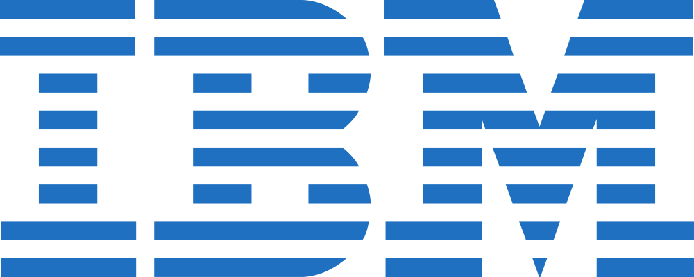

A full stack software developer with experience from industry giants in hybrid mobile development, being a quick a learner and comfortable wearing different hats, I'm seeking to work with a team that is always taking on new challenges and providing awesome products and great experiences for the clients.
AbdullahAdeeb
Computers & Systems Engineering (B.Eng.)
27 Cottonwood Crt. Thornhill, ON
Contact@AbdullahAdeeb.com
www.AbdullahAdeeb.com
(613) 402-2819
Contact@AbdullahAdeeb.com
www.AbdullahAdeeb.com
(613) 402-2819
Sep, 2010
Started Uni.
May, 2012

May, 2013
May, 2014

Sep, 2014
Graduated Uni.
May, 2015
Sep, 2015
Present...
Objective
Education
Bachelor of Engineering
Computer Systems (with Co-op)

Ottawa, ON, Canada
- Graduated (GPA: 9.4/12) May 2015
- Carleton University Entrance Scholarship 2010 - 2011
- Carleton University Dean's Honor List 2010 - 2011 & 2014 - 2015
Selected Skills & Abilities
Technical Skills:
Advanced
Intermediate
Novice
* This resume is made with HTML, CSS, and JS at www.AbdullahAdeeb.com/resume